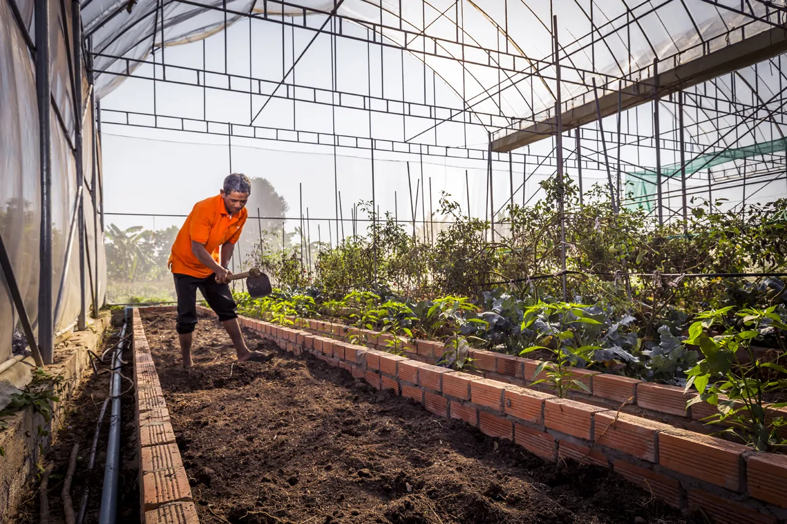
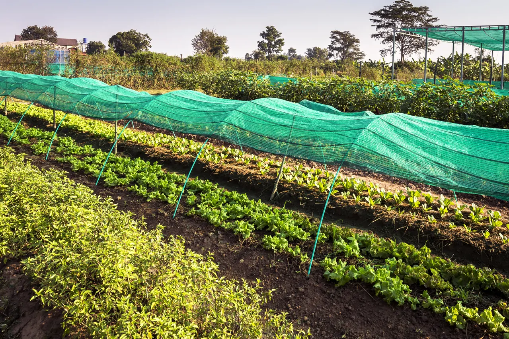
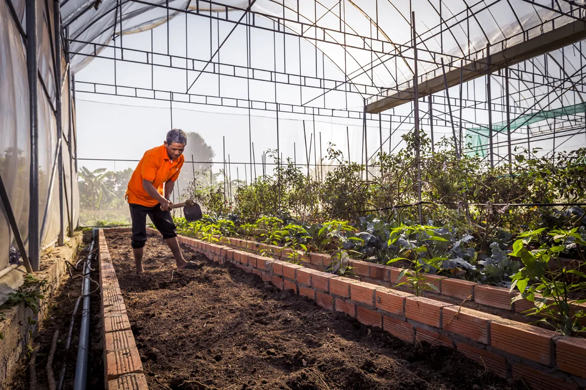
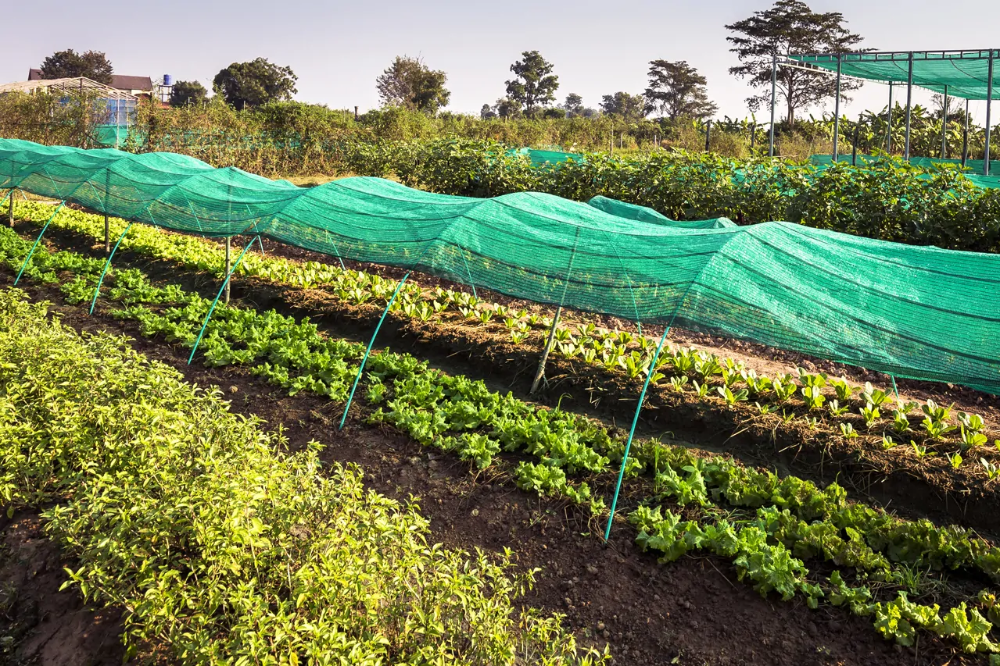
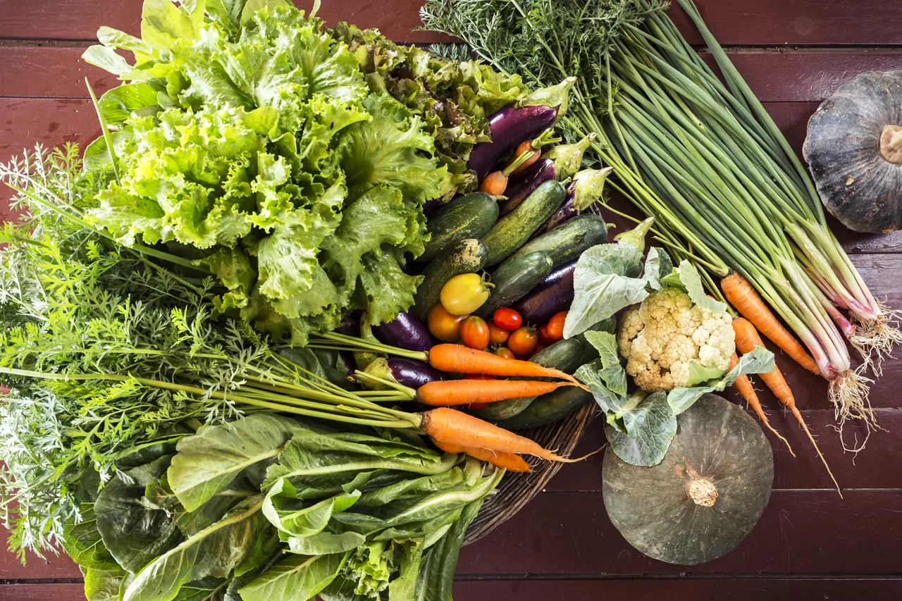
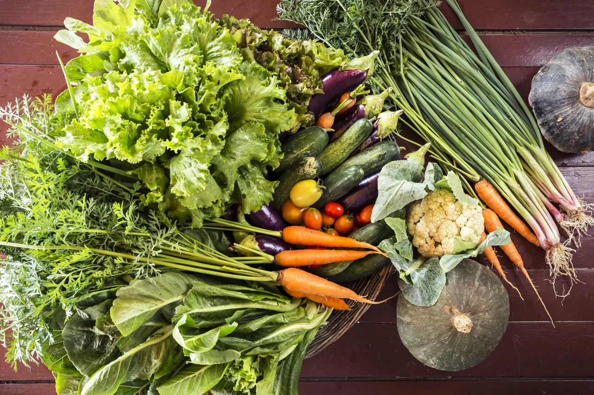

Our Oragnic Farm
Living conditions remain hard in the Cambodian countryside and lots of villagers are still compelled to leave their homes and work in construction or farming abroad. This is one of the conditions we aim to avoid by firmly re-establishing the foundation of agricultural techniques and, by doing so, reinforcing the primary sector in Cambodia. We aspire to become a pilot farm to this end. As part of this endeavour, we will develop a label for organic products in Cambodia.

Fruit & Vegetables


 





 
